Réal : « Check ça, Christian — le pitch de ta prochaine 4th Hour. En anglais, comme t'as demandé. »

The Call-In Hour
“Every night at 3:40, a dead man calls in to tell her who to save.”
Plan prêt — en attente de ton OKWinter 1995, Marrow Falls, a mill town on a frozen river. Nadia Kell hosts « Night Line », the overnight call-in show at CKMF that nobody at the station takes seriously. One night at 3:40 the switchboard lights up: Danny Oake, a regular listener who drowned in the river a year ago. He knows things. He tells her which of tonight's callers won't make it to morning, and how to save them.
She saves one. Then two. Ratings climb; the town starts listening at 3:40. But each time, the delay log shows one call too many. Danny is honest about the price: every life she saves leaves an empty chair, and someone has to take his place on the line.
Nadia keeps the dump button under her finger, but she figures out too late that she's the one who's been on air the whole time.

- The hour opens at 3:40.
- The offer — and its cost: every saved life leaves an empty chair.
- The File Page closes it: “Confirmed. File.”
- ~25,000 words, ~14 chapters
- English only
- Written by Claude, Réal as editor
- Then an Arena audiobook
Marrow Falls is invented. Town and character names may still change.
Réal : « Là, t'as toute l'histoire, du début à la fin. Les spoilers sont cachés, touche pour voir. »
Mon Jan 23, 1995. Nine years into Night Line, Nadia runs the overnight with Kev on the index cards and Ernie calling in the wind chill. At 3:40 line 4 lights, Call Display 03:40, no number: “Nadia, it's Danny.” She dumps it. He's back inside the delay and names Shawna on line 2, sitting in a running car in a closed garage. Nadia keeps her talking through the 4:00 news. Shawna opens the door.
Kev logged 14 calls; the logger holds 15 — a 7-second call from line 4, wind and a woman's breath. Nadia hides the reel. Bill has the memo: satellite overnights in April unless Night Line proves itself. She stops answering; nobody dies, and the calls spike. On night 4 she answers: Tyler, 14, a friend not breathing on a bathroom floor. She keeps him on till the ambulance. The paper calls her a hero.
⚠️ Spoiler — tap to reveal
The extra call grows: a voice saying “it's”. Kev was at the Rail payphone at 3:38–3:45, so Nadia believes he's paying and sends him home. Mon Jan 30 she runs the hour alone and saves Gord, parked at the Rail with a hose. But her watch is 7 seconds fast, her boots are wet, and the OPP report her car idling at the Rail. On the logger, with Kev, she hears it: the extra voice is hers. She finally confesses she dumped Danny and lied to the police.
Danny's voice is almost gone: one more save and he can stop. Thursday is the anniversary.
⚠️ Spoiler — tap to reveal the twist
Bill runs satellite. At 3:40 line 4 rings in the empty studio and the board goes live on its own. Lorraine Oake calls line 1 for the first time, gas range on, unlit. Ernie, listening: “Nadia, you sound like you're outside.” Nadia drives in, answers line 4 and keeps Lorraine on till 4:00 — and realizes the voice on line 4 is hers, 7 seconds ahead. She's been on air the whole time.
Ch14, Kev: the studio live, her coat on the chair, the DANNY B-DAY cart cued, her car at the Rail, the receiver hanging, a quarter on the shelf. The OPP search the black water. Next night, Kev's last shift: at 3:40 line 4 lights. 03:40. He doesn't pick up yet.
Danny is released. Nadia is the one who answers now. The debt is paid whole.
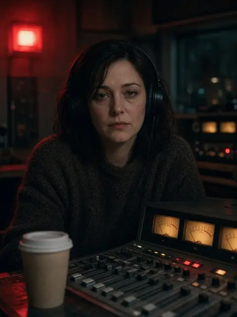
Nadia Kell, 38Host of Night Line, nine years.Want: Wants to keep the show alive.
Wound: She dumped Danny at 3:38 and told police he never called.
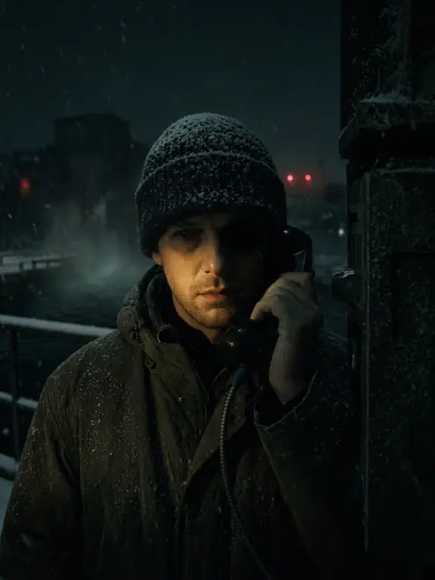
Danny Oake, †31“Danny from the Flats”, drowned Feb 2, 1994.Want: Wants to give her the save nobody gave him.
Wound: Cut off on air, walked out on the black water.
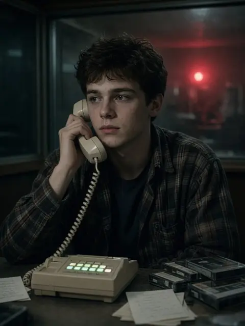
Kev Lapointe, 19Screener, Algonquin placement student.Want: Wants a full-time air shift.
Wound: Dad laid off at Ashdown.
Want: Wants the show to prove itself to the new owners.
Wound: Holds the satellite memo.
Want: Never calls.
Wound: Calls once, the last night.
Want: Wants the wind chill and the Leafs.
Wound: The one who hears Nadia sounds outside.
Want: Waiting for her husband's truck.
Wound: Sitting in a running car in a closed garage.
Want: Wants his friend to breathe.
Wound: Friend down on a bathroom floor.
Want: Parked at the Rail.
Wound: A hose in his truck.
- The hour opens at 3:40 and closes at 4:00, when the network news joins.
- Line 4 lights. Call Display reads 03:40, no number. Danny's voice.
- He names one caller who won't see first light. Keep them on air through the hour and they live.
- The cost: the dead caller's place on air must be filled. Each save, the logger holds one call more than the screener logged.
- Danny gets thinner each night; the hybrid can't find him.
- Signs, never named: cold on the neck, meters dip, the watch runs slow then snaps true.
- No speeches. Nobody explains the series.
1. Night Line · Mon Jan 23
3:40, line 4: “Nadia, it's Danny.” She hits DUMP — he's back inside the delay.2. Line Two · Mon Jan 23
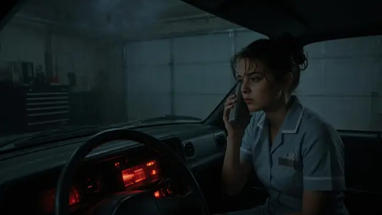
Danny names Shawna; Nadia keeps her on till the 4:00 news. Shawna lives.3. Fifteen · Tue Jan 24
Kev logged 14 calls; the logger holds 15. Nadia hides the reel.4. The Flats · Tue Jan 24, day
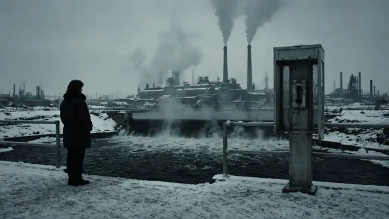
Danny's street, the Rail payphone, her old lie. Bill's memo: satellite in April.5. Not Answering · Tue–Wed Jan 24–25
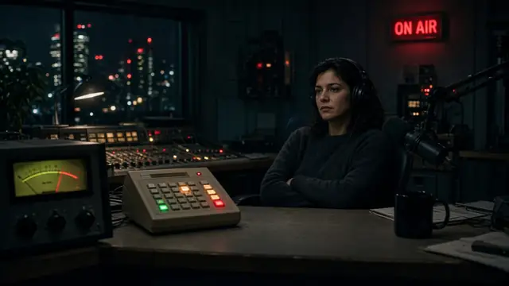
She lets line 4 ring out. Nobody dies; calls spike on “the ghost caller”.6. Tyler · Thu Jan 26
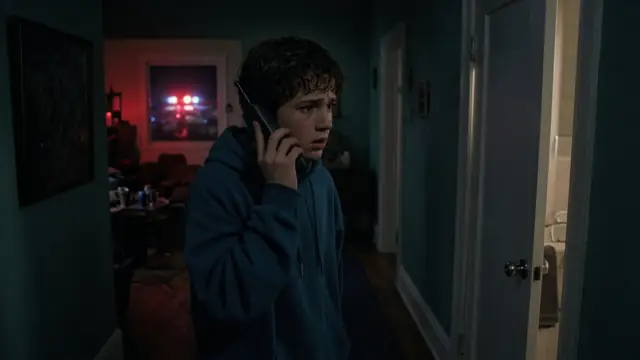
She answers. Tyler, 14, kept on till paramedics. The paper calls her a hero.7. Smoke Break · Fri Jan 27
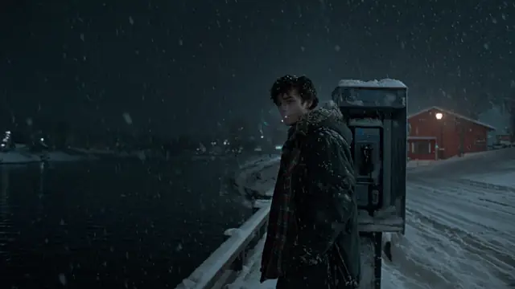
The extra call is longer: “it's”. Kev was at the Rail 3:38–3:45.8. Alone · Sun–Mon Jan 29–30
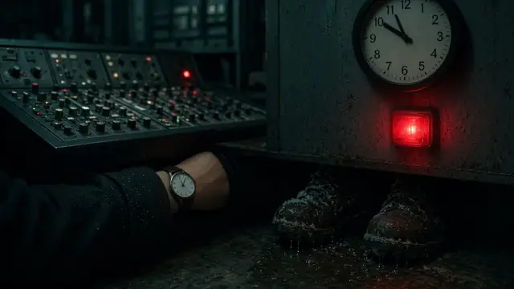
She screens her own lines. Saves Gord. Her watch is 7 seconds fast, boots wet.9. Car at the Rail · Tue Jan 31
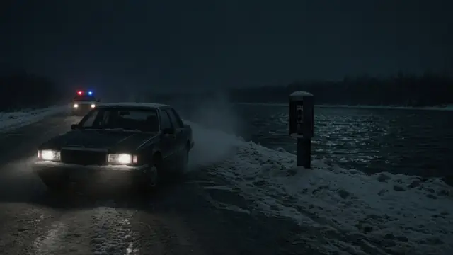
OPP: her Celebrity idling at the Rail at 3:42. A carton of reels dated “3:40”.10. Nadia from Marrow Falls · Tue Jan 31, day
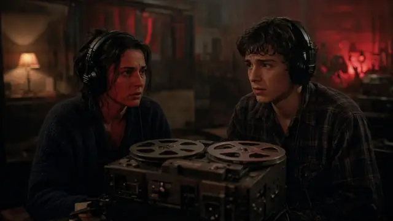
The extra voice is hers. She confesses to Kev.11. Anniversary Eve · Wed Feb 1
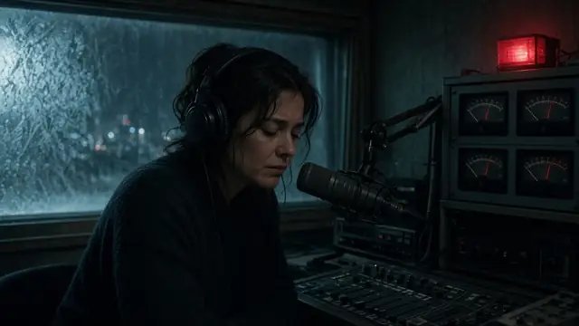
Danny almost gone: “You know who answers, Nadia.” She asks for satellite.12. Satellite · Thu Feb 2
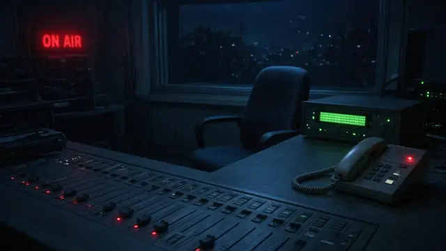
Empty studio, line 4 rings. Lorraine on line 1, gas on. Ernie: “you sound like you're outside.”13. On Air · Thu Feb 2
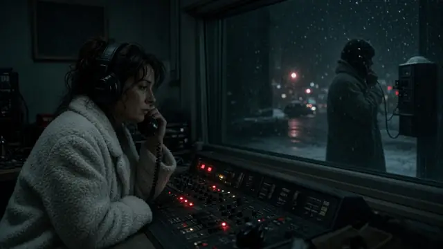
She answers line 4 and keeps Lorraine to 4:00. She's been on air the whole time.14. Four O'Clock News · Fri Feb 3 (Kev)
Coat on the chair, payphone hanging, a quarter on the shelf. Next night: 03:40. He doesn't pick up yet.
File Page: CKMF program log, Feb 2 1995 — “N.K. 3:40. Confirmed. File.”
- Nadia disparaît, sans corps. Ça te va?
- Le chapitre 14 est raconté par Kev. Ça te va?
- Les noms CKMF 1340 AM et Kev Lapointe, c'est correct?
Pitch du 22 octobre 2026 · Réal